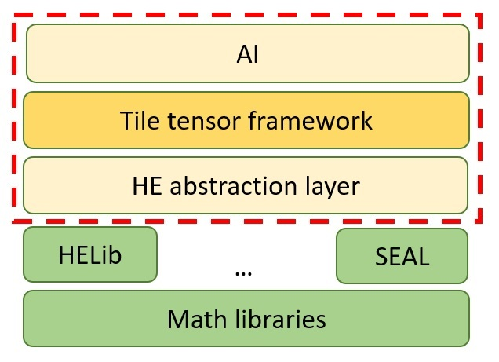

Goals
The main goals of this SDK are...
- To provide a smooth transition from a non-encrypted environment to a privacy preserving one
- Optimize processes that would otherwise require cryptographic and specific library knowledge to run efficiently
- Enable HE-based computations without dependence on a specific homomorphic encryption library
Overview
The helayers SDK uses low-level HE cryptographic libraries such as HElib or SEAL, and adds functionality on top of it in a layered structure as follows:
The SDK is structured into different layers. The layers are setup for different uses depending on how you would like to interact with the SDK.
- HEBase: This layer contains abstract interfaces that can wrap an underlying HE library, providing a uniform API to access different libraries, thus allowing to write library agnostic and scheme-oblivious code (as much as possible).
- Packing Algorithms and Math: This layer contains tools for doing high-level operations such as matrix multiplication and polynomial evaluation. Central to this layer is the concept of a tile tensor: an innovative data structure that allows packing arbitrary tensors (multi-dimensional arrays widely used in AI) in a variety of ways. In addition, this layer contains a generic bootstrapping algorithm for the CKKS scheme. It can work with any CKKS implementation, though currently tested only with SEAL. The layer further contains innovative algorithms for computing functions not directly supported by the underlying HE libraries, such as
sign(x), abs(x), and compare(x,y).
- AI and Query Tools: This layer contains AI tools, can inference over multiple types of models, neural networks, decision trees, logistic regression, linear regression, and kmeans. This layer includes an innovative optimizer, that optimizes the use of a specific model. It will adjust the underlying HE library parameters as well as some high level packing details and other parameters, in accordance with user constraints and optimization preferences regarding time and memory usage, either on the client or server side. Also included (in the next release) are logistic regression training, and basic neural network training capabilities, that can be deployed to be used in interactive mode, and in the future also non-interactively. In addition, there are tools for querying an encrypted database with an encrypted query. I.e., such that the database server can’t see what is being queried or the result.
- All layers contain research and debug tools, allowing to test algorithms in mockup settings, get detailed trace data, compare approaches, and more.
An additional mltoolbox module contains tools for helping data scientists convert their models to be FHE friendly. The mltoolbox module is available through the Python APIs only.
Helayers contains some additional tools based on other cryptographic techniques besides FHE:
- The Accord submodule: Multi-party computation (MPC) and Zero-knowledge proofs (ZKP). (Note: available through Python APIs only, and not available on IBM Z platforms).
- Privacy preserving record linkage protocol. The protocol is similar to the Private-Set-Intersection (PSI) protocol, except that it allowes for similarities rather than requiring exact equivalence of the reported candidate pairs. The similarity of the records is measured in terms of the Jaccard similarity index of the two records.

Python API
There is a C++ API as well as Python API. The Python API contains most of the functionality, and in future versions will cover all the API. The tutorials are available both in C++ and in Python as Jupyter notebooks.
Further included is the pyhelayersext API which allows easily converting existing python scripts to FHE. A python script for training and/or testing models with Scikit-learn or Keras can be converted to perform predictions under FHE by adding a single import statement. See the two demos with the _pyhelayersext_ term in their titles.
Underlying HE Library Support
The following schemes and libraries are currently supported:
- Full support (entire available API of the underlying library is covered and used):
- HElib-CKKS
- SEAL-CKKS
- HEaaN-CKKS
- Basic API support:
- HElib-BGV
- HElib-BGV in bitwise mode
It is possible to compile the SDK with only some of the supported libraries, allowing it to run without dependence on the unused ones. (Premium Edition Only)
Approach For Providing an Abstraction of Multiple Libraries and Schemes
Most Homomorphic Encyption computations are basically a series of additions and multiplications, supported by all underlying HE libraries. Hence most of the code written in the HElayers SDK will be library and scheme agnostic. However, some libraries and schemes offer unique functionalities that can be exploited for specific use cases. The HElayers SDK API provides all the functionality of the supported schemes and libraries, to maximize the use of each to its fullest extent.
To maintain scheme and library abstraction as much as possible, the following steps are taken:
- The HELayers SDK attempts to compensate internally for missing functionality where possible. E.g., the “power” operator is directed to the library’s native power operator if it exists, or otherwise a generic algorithm inside helayers for evaluation of powers using multiplication is used.
- A “traits” class HeTraits can be queried by the user to detect which functionality is supported by the underlying library. The user can use this information in one of two ways:
- Assert that mandatory functions are present. This will provide immediate clear diagnostics, if choice of library and scheme mismatches required computation.
- Condition on underlying traits, to choose one algorithm or another based on available functionality. This will take advantage of useful functionality where available, while maintaining general library and scheme obliviousness.
Class Overview
Both C++ and Python APIs offer the same list of classes detailed below.
HEBase
Main classes:
- HeContext – The main access point to the underlying cryptographic library. Initialized during startup to a specific library and scheme. Most other classes receive a reference to it in their constructors.
- HeTraits – A list of flags indicating the available functionality of the underlying library and scheme: floating point numbers, complex numbers, the bootstrapping operation, bitwise manipulation, automatic rescaling, and others. This class can be used in asserts to make sure the chosen library and scheme provides a minimal set of requirements for a given computation. Or, different algorithm choices can be made based on these traits.
- CTile – A ciphertext object. Supports basic operators such as add, multiply, rotate, and others.
- PTile – A plaintext object in encoded form (a preprocessing stage prior to encryption).
- Encoder – A class for performing encryption, decryption, encode, and decode.
This layer contains further specific implementations of the above abstract classes for the supported underlying libraries.
Research and debug classes:
- MockupContext – A mockup implementation of HeContext without any cryptography. It allows fast runs for testing.
- DebugContext – An implementation of HeContext that allows comparing other HeContexts. It is configured with two other pre-initialized HeContext objects (e.g., one for a cryptographic library and one for the mockup), delegates all calls to both of them, and compares the results. Useful for example for tracing CKKS noise, to see which steps cause it to build up the most, or to detect problems in the HE system configuration, pinpointing where the computation goes wrong.
Packing Algorithms and Math
Main classes:
- BootstrapEvaluator – Compute the bootstrapping operation. Currently supports only CKKS scheme in SEAL (implementation in helayers), and HEaaN (native).
- CTileTensor – A tile tensor object. Representing an encrypted tensor (multi-dimensional array, e.g., a matrix, or array of matrices). Supports high level operators such as matrix multiplication, sum over a dimension, replicate a dimension, elementwise operators, and others.
- PTileTensor – A tile tensor in encoded (not encrypted) form. Useful for elementwise operators with CTileTensor.
- TTEncoder – A class for performing encryption, decryption, encode, and decode for tile tensors.
- FunctionEvaluator – Efficient algorithms for evaluation of powers, polynomial evaluation, and some approximations for useful functions such as sigmoid, absolute, sign, and others. Note: If the underlying HE library supports some of these functions, and the library’s implementation is more efficient than the SDK’s, the calls will be delegated to the library’s functions.
- BitwiseEvaluator – Some libraries and scheme support manipulation on individual bits of the encrypted numbers. This class contains API based on such manipulation: extract MSB, split to bits, and others. When using a library/scheme that does not support bit level manipulation, an exception will be thrown. The HeTraits class can be queried for the availability of this functionality.
AI
The layer is designed to allow easy migration from working with AI using standard libraries to working with the same models under HE. It supports the use case inference over an encrypted input and encrypted model, or encrypted input and non-encrypted model. The user can import models trained using standard AI tools via standard file formats, and start performing inference under encryption with only a few lines of code.
Main classes:
- HeModel: An abstract class representing a model for performing inference under encryption. Current subclasses: NeuralNet, XGBoost, LogisticRegression (also supports linear regression), KMeans, Arima, DTree.
- PlainModel: An abstract class representing a plain model imported from standard AI libraries. It stores the model data, and for some subclasses it can perform inference as well (for testing purposes). Every model class has an accompanying plain class, e.g. NeuralNetPlain for NeuralNet, and LogisticRegressionPlain for LogisticRegression.
The models currently only support inference. Upcoming future versions will support limited training capabilities: For logistic regression, and for some types of neural networks. The HE models support binary I/O to allow transferring to a server. The plain models support reading from standard file formats.
The neural network capabilities currently include any combination of fully connected layers, convolutional layers, mean-pooling, and batch normalization. Activation functions include square, sigmoid polynomial approximation, and user defined (or trained) polynomials. Upcoming training will include a dropout layer, and support for stochastic gradient descent with momentum.
- HeProfileOptimizer: The optimizer object for generating a profile for a given model.
- HeProfile: The results of optimizing a given model. This object contains all relevant parameters for efficiently encrypting and using a given model.
- Table: An encrypted database table. Supports querying it with unique select, count, sum, and average, optionally conditioned on another column using equality or less-than or greater-than operators. The condition threshold value can be encrypted as well.
- DTree: An encrypted decision tree model. Supports prediction over encrpyted data. This class is planned to be integrated with (helayers::HeModel).
- Crf: A class supporting the training of a Completely Random Forest (CRF) [18] over encrypted data. The class also supports binary I/O to allow transferring the trained model from a server to a client. The encrypted trained model can be decrypted to get a (helyaers::CrfPlain) class, which supports the prediction of plain samples. This class is planned to be integrated with (helayers::HeModel).
- XGBoost An encrypted XGBoost model. Supports prediction over encrypted data. This class is planned to be integrated with (helayers::HeModel). For now, the XGBoost class is programmed to maximize throughput, which may come at the account of higher latency. A latency minimization support may be added in future versions.
- LogisticRegression Training and inference for logistic regression models. The activation function can be approximated to various degrees, or turned off to obtain lineaer regression.
- KMeans Find the nearest centroid for each sample in a given batch.
- Arima Training and inference of ARIMA models for time series analysis.
- DTree Inference over a decision tree.
Tutorial Overview
The SDK demostrates several end-to-end use cases that are implemented through a series of different tutorials. In order to make the tutorials more educational, we simplify the examples by running the client and server objects on the same machine. While they are both running on the same machine, they communicate via files. It’s easy to pull them apart, and load onto different machines. There would still be a need to implement a mechanism for sending files over, or replace the I/O api to write to sockets or other communication means instead of files.
Most demos are available in two forms: as C++ code using the library’s C++ API (helayers-lab docker image), or a Jupyter notebook using the library’s Python API (helayers-pylab docker image).
The demos are:
- FHE basics. A tutorial for the HEBase layer in HeLayers.
- Credit card fraud detection using neural network inference. The network’s architecture is based on a notebook implemented by the Kaggle community (https://www.kaggle.com/omkarsabnis/credit-card-fraud-detection-using-neural-networks see references [1-9]), while some changes was applied to make the network's architecture FHE friendly. The network was trained using a realistic dataset taken from Credit Card Fraud Detection. This dataset contains actual anonymized transactions made by credit card holders from September 2013, and is labeled for transactions being fraudulent or genuine. The server works with both network and incoming data encrypted. Can be configured for throughput or latency, reaching a maximum of 4000 samples per second throughput on a benchmark machine (see below), or minimal latency of 0.5 second (including I/O and encrypt/decrypt time).
- Logistic regression inference: compute a logistic regression model inference over a batch of input vectors.
- Text classification: This demo is based on the 20-newsgroups dataset (see reference [16]) and classifies a text snippet to its relevant category. The demo includes training the neural network model in the clear, then perform inference under encryption. For the demo, we used only 4 out of 20 available categories.
- Image classification using an HE friendly modified version of AlexNet (See reference [17]), SqueezeNet or ResNet-18. It computes inference over a single 50K RGB pixel encrypted image in 3.5 minutes (AlexNet) with a non-encrypted model on a 88-CPU machine.
- Database query: Several demonstrations of various techniques to query an encrypted database. We show a unique select demo over a database encrypted with BGV, and more general tools for doing encrypted queries for count, sum, average and standard deviation, conditioned on either equality or greater-than operators, using the CKKS scheme (the CKKS demo is in C++ only). The server sees nothing except the names of the columns being queried and the type of condition (equality or greater-than, etc…).
- Kmeans inference: compute the nearest centroid for a set of input vector. The Euclidean distances are computed under encryption, and the final arg-min computation is done in post-processing on the client side.
- Linear regression inference: compute a linear regression model inference over a batch of input vectors.
- MNIST classification (See reference [10]): A known HE network inference benchmark architecture CryptoNets (See reference [11]), used for classifying images of digits. The network has a convolution layer, followed by two fully connected ones. The server works with both network and incoming data encrypted. Can be configured for throughput or latency, reaching a maximum of 4400 samples per second throughput on a benchmark machine (see below), or minimal latency of 0.7 second.
- Heart disease detection using neural network inference. (See references [12-15])
- Tile tensor API tutorial.
12-13. Two demos demonstrating the pyhelayersext api, which offers easy integration with scikit-learn/keras libraries. We add a single import instruction to a regular training and testing script, and it replaces scikit-learn/keras predictions with the FHE implementation. The FHE configuration details are taken from fhe.json configuration file.
- COVID-19 predictions using encrypted CT scans. Each image is 224x244x3 pixels, and the prediction is done using a 5 layer convolutional neural network.
- Logistic Regression Training on a Credit Card Fraud Detection Dataset: A demo demonstrating the training of a logistic regression encrypted model under HE using an encrypted dataset of credit card transactions. The trained model is used to run inference on encrypted samples.
- Completely Random Forest training over encrypted data: A demo demonstrating the training process of a Completely Random Forest [18] model with encrypted samples from UCI's Adult dataset [19].
- Entity resolution: (ER for short) identifying different records that refer to the same entity, and then handling the identified records as needed. The example demonstrates a specific case of ER, namely Record-Linkage (RL), that deals with identifying records in different databases which refer to the same entity. Our ER library performs such Record-Linkage in a privacy-preserving manner (PPRL).
- ARIMA prediction: ARIMA model training and prediction on encrypted data.
- MLToolbox demonstration: Using MLToolbox to convert a general NN model into an FHE-Friendly NN model with nearly the same performance, that can later be encrypted and used for prediction on encrypted data.
- Prediction over the iris dataset [20] using an XGBoost model. First, an XGBoost model is trained in the clear. Then, the trained model is encrypted and used to run prediction over encrypted test samples from the iris dataset. For now, the FHE XGBoost model is programmed to maximize throughput, which may come at the account of higher latency. A latency minimization support may be added in future versions.
- Calculation of one-hot encoding under homomorphic encryption. One-hot encoding converts a number 1-n to a vector of n 0-1 indicators. Given an encrypted input vector of numbers and a vector of possible values that the input vector might contain, we calculate a set of encrypted indicator vectors. Each indicator vector corresponds to a different possible value and contains 1 in the slots where that value appears in the original vector.
- A demo of Private Set Intersection process between three parties to be used for Vertical Federated Learning. Private Set Intersection is the process of finding common entries in two datasets or more without disclosing any information about the data. In Vertical Federated Learning the dataset is paritioned "vertically" between the parties, meaning that each party holds different features of some subset of the samples, while each sample is identified by a unique UID. Given list of UIDs and the partial dataset of one of the parties, the objective is to calculate an encrypted dataset that contains only the samples that appear also in the datasets of the other parties, and do so without disclosing any information to each of the parties.
C++ Only tutorials:
- CircLayer tutorial - a demo of low level optimization achievable by examining the computation circuit.
- Bitwise tutorial - A tutorial of HEbase's API for bitwise scheme.
- Credit card fraud detection using a decision tree. The decision tree was trained in the clear on the same data set as above. The server performs classification when both tree and incoming data are encrypted.
Training: In subsequent version we’ll add tools for interactive training of small networks, including convolutional layer (as first layer), mean-pooling, dropout and fully connected layers. Activation layer and loss functions are limited to simple squaring and Euclidean loss. Optimization algorithm restricted to stochastic gradient descent or stochastic gradient descent with momentum (but not ADAM).
Measurement reported above are on a 24 CPUs, Intel(R) Xeon(R) CPU E5-2620 v3 @ 2.40GHz machine with 384 GB memory.
References
- Andrea Dal Pozzolo, Olivier Caelen, Reid A. Johnson and Gianluca Bontempi. Calibrating Probability with Undersampling for Unbalanced Classification. In Symposium on Computational Intelligence and Data Mining (CIDM), IEEE, 2015
- Dal Pozzolo, Andrea; Caelen, Olivier; Le Borgne, Yann-Ael; Waterschoot, Serge; Bontempi, Gianluca. Learned lessons in credit card fraud detection from a practitioner perspective, Expert systems with applications,41,10,4915-4928,2014, Pergamon
- Dal Pozzolo, Andrea; Boracchi, Giacomo; Caelen, Olivier; Alippi, Cesare; Bontempi, Gianluca. Credit card fraud detection: a realistic modeling and a novel learning strategy, IEEE transactions on neural networks and learning systems,29,8,3784-3797,2018,IEEE
- Dal Pozzolo, Andrea Adaptive Machine learning for credit card fraud detection ULB MLG PhD thesis (supervised by G. Bontempi)
- Carcillo, Fabrizio; Dal Pozzolo, Andrea; Le Borgne, Yann-Aël; Caelen, Olivier; Mazzer, Yannis; Bontempi, Gianluca. Scarff: a scalable framework for streaming credit card fraud detection with Spark, Information fusion,41, 182-194,2018,Elsevier
- Carcillo, Fabrizio; Le Borgne, Yann-Aël; Caelen, Olivier; Bontempi, Gianluca. Streaming active learning strategies for real-life credit card fraud detection: assessment and visualization, International Journal of Data Science and Analytics, 5,4,285-300,2018,Springer International Publishing
- Bertrand Lebichot, Yann-Aël Le Borgne, Liyun He, Frederic Oblé, Gianluca Bontempi Deep-Learning Domain Adaptation Techniques for Credit Cards Fraud Detection, INNSBDDL 2019: Recent Advances in Big Data and Deep Learning, pp 78-88, 2019
- Fabrizio Carcillo, Yann-Aël Le Borgne, Olivier Caelen, Frederic Oblé, Gianluca Bontempi Combining Unsupervised and Supervised Learning in Credit Card Fraud Detection Information Sciences, 2019
- Yann-Aël Le Borgne, Gianluca Bontempi Machine Learning for Credit Card Fraud Detection - Practical Handbook
- LeCun, Yann and Cortes, Corinna. "MNIST handwritten digit database." (2010): .
- Gilad-Bachrach, R., Dowlin, N., Laine, K., Lauter, K., Naehrig, M. & Wernsing, J.. (2016). CryptoNets: Applying Neural Networks to Encrypted Data with High Throughput and Accuracy. Proceedings of The 33rd International Conference on Machine Learning, in Proceedings of Machine Learning Research 48:201-210 Available from https://proceedings.mlr.press/v48/gilad-bachrach16.html.
- https://archive.ics.uci.edu/ml/datasets/Heart+Disease
- Detrano, R., Janosi, A., Steinbrunn, W., Pfisterer, M., Schmid, J., Sandhu, S., Guppy, K., Lee, S., & Froelicher, V. (1989). International application of a new probability algorithm for the diagnosis of coronary artery disease. American Journal of Cardiology, 64,304–310.
- David W. Aha & Dennis Kibler. "Instance-based prediction of heart-disease presence with the Cleveland database."
- Gennari, J.H., Langley, P, & Fisher, D. (1989). Models of incremental concept formation. Artificial Intelligence, 40, 11–61.
- http://kdd.ics.uci.edu/databases/20newsgroups/20newsgroups.html
- Krizhevsky, Alex and Sutskever, Ilya and Hinton, Geoffrey E. "Imagenet classification with deep convolutional neural networks", Advances in neural information processing systems 25, 2012.
- Aslett, Louis JM, Pedro M. Esperança, and Chris C. Holmes. "Encrypted statistical machine learning: new privacy preserving methods." arXiv preprint arXiv:1508.06845 (2015).
- Kohavi, R., Becker, B.: Uci machine learning repository - adult dataset (1996), https://archive.ics.uci.edu/ml/datasets/adult18.
- C. L. Blake and C. J. Merz, UCI Repository of machine learning databases - iris dataset https://archive.ics.uci.edu/ml/datasets/iris